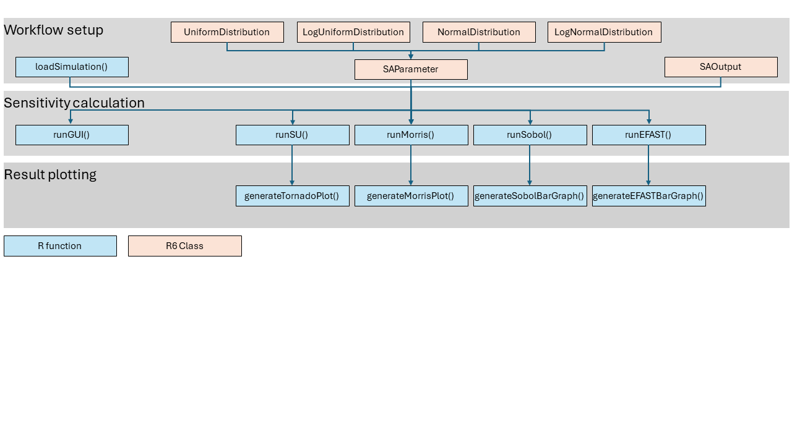
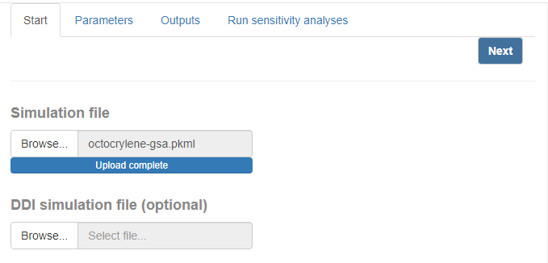
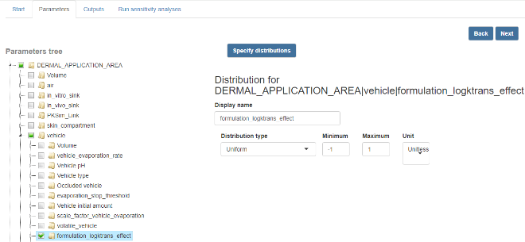
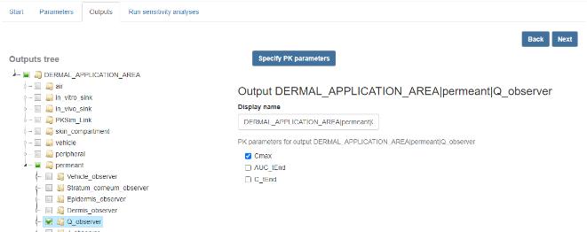
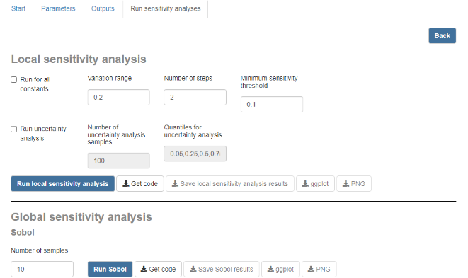

The OSP Global Sensitivity package facilitates the
implementation of one-at-a-time (OAT) and global sensitivity analyses
(GSA) of physiologically based pharmacokinetic (PBPK) models built in
the Open Systems
Pharmacology (OSP) Suite. The package evaluates the sensitivity of
user-selected pharmacokinetic (PK) parameters, such as the maximal
concentration (C_max) and the area under the curve
(AUC), for user-selected model output time profiles, with
respect to user-selected model input parameters.
This article describes how to install the package and walks through the building blocks of a sensitivity analysis workflow. It corresponds to Supplementary Materials 3 of the accompanying publication:
Najjar A, Hamadeh A, Krause S, Schepky A, Edginton A. Global sensitivity analysis of Open Systems Pharmacology Suite physiologically based pharmacokinetic models. CPT Pharmacometrics Syst Pharmacol. 2024;13:2052-2067. doi: 10.1002/psp4.13256
Installation
The OSP Global Sensitivity package can be installed and then loaded using the commands:
install.packages("path/to/ospsuite.globalsensitivity.zip")
library(ospsuite.globalsensitivity)Overview of the workflow
The figure below provides an overview of the R functions and R6 classes of the OSP Global Sensitivity package to which the user has access and which are needed to run a sensitivity analysis workflow. The workflow can be decomposed into three steps:
-
Workflow setup: Here the user provides:
- the path to the PKML simulation file and, if performing sensitivity
analyses of drug-drug interaction (DDI) ratios, the path to the PKML DDI
simulation file, via the
loadSimulation()function. - An R list of the model parameters to be analyzed. These parameters
are provided in the form of objects of the R6
SAParameterclass. During the instantiation of a parameter object of this class, a probability distribution is provided in the form of an R6 object of either theUniformDistribution,LogUniformDistribution,NormalDistribution, orLogNormalDistributionclass. - An R list of the model outputs to be analyzed as
SAOutputobjects. Each such object includes the path of the model output in the PKML simulations as well as the PK parameters to be evaluated for each of the model outputs.
- the path to the PKML simulation file and, if performing sensitivity
analyses of drug-drug interaction (DDI) ratios, the path to the PKML DDI
simulation file, via the
-
Sensitivity calculation: Here, the user may conduct
a sensitivity analysis using any of four sensitivity calculation
functions:
-
runSU()conducts one-at-a-time local sensitivity and uncertainty analyses. -
runMorris()conducts a Morris screening. -
runSobol()andrunEFAST()conduct variance-based sensitivity analyses using the Sobol and EFAST algorithms respectively.
-
-
Result plotting: Each of the sensitivity
calculation methods has its dedicated function for plotting sensitivity
analysis results:
-
generateTornadoPlot()is used to plot the results of a one-at-a-time local sensitivity or uncertainty analysis returned byrunSU(). -
generateMorrisPlot()is used to plot the results of a Morris screening returned byrunMorris(). -
generateSobolBarGraph()andgenerateEFASTBarGraph()plot the results of variance-based sensitivity analyses returned byrunSobol()andrunEFAST()respectively.
-

Overview of the R functions and R6 classes of the OSP Global Sensitivity package.
Loading PKML models
A model in the required PKML simulation format may be generated from
a PK-Sim or MoBi simulation. The user enters the full path to this file
to load it using the loadSimulation() function:
simFilePath <- "path/to/simulation-file.pkml"
simulation <- loadSimulation(simFilePath)
# A simulation with a DDI can similarly be loaded if sensitivity analysis of
# DDI ratios is required:
DDIsimFilePath <- "path/to/DDI-simulation-file.pkml"
DDIsimulation <- loadSimulation(DDIsimFilePath)Specifying model parameters for analysis
A convenient way to access the paths of parameters and outputs in the
simulation is to use the getSimulationTree() function from
the ospsuite package:
tree <- getSimulationTree(simulation)The user next provides the R list of the model parameters as
SAParameter objects. Each such object includes the path of
every input parameter in the PKML simulations as well as the probability
distribution of each input parameter. The inputs for the specification
of an input parameter are:
-
simulation(required): the simulation object previously loaded, in which the parameter must be located. -
DDIsimulation(optional): the previously loaded DDI simulation object, in which the parameter must be located at the exact same path as in thesimulationobject. -
path(required): the path of the input parameter in the PKML simulation objectssimulationandDDIsimulation(if provided). -
displayName(optional): a convenient short name for the input parameter that can be used in plots and tables. -
parameterDistribution(optional): a probability distribution object for the input parameter, selected from among the four R6 classes:UniformDistribution,LogUniformDistribution,NormalDistribution, andLogNormalDistribution. -
unit(optional): for non-dimensionless parameters, this input allows the user to specify the units of the descriptors of the probability distribution of the parameter, such as the mean and variance of a normal distribution. If not provided, the units of the probability distribution are assumed to be the base units of the dimension of the parameter in the PKML simulation.
A list of input parameters can be created as follows:
parametersList <- list(
SAParameter$new(simulation = simulation,
path = tree$path$to$parameter1$path,
displayName = "parameter1",
unit = ospUnits$Length$µm,
parameterDistribution = LogNormalDistribution$new(mean = 10, CV = 0.5)
),
SAParameter$new(simulation = simulation,
path = tree$path$to$parameter2$path,
displayName = "parameter2",
parameterDistribution = UniformDistribution$new(minimum = 0, maximum = 1)
),
SAParameter$new(simulation = simulation,
path = tree$path$to$parameter3$path,
displayName = "parameter3"
),
SAParameter$new(simulation = simulation,
path = tree$path$to$parameter4$path,
displayName = "parameter4"
)
)Here, four input parameters are defined. The first has a path within
the simulation encoded by the output of
tree$path$to$parameter1$path. It has a dimension of
Length and a LogNormal distribution that is
best described in units of micrometers (µm) with mean 10 and CV
(coefficient of variation) of 0.5. The unit (µm) can easily be specified
using the ospUnits list provided in ospsuite. In
contrast, the second parameter has a Uniform distribution.
This second parameter is dimensionless, and therefore no units for its
distribution are specified. Note that the descriptors for the two
distributions are different. The Uniform and
LogUniform distributions take parameters
minimum and maximum. The Normal
distribution takes a mean and standard deviation
(stdv) input.
If no distribution is specified for a parameter, as for
parameter3 and parameter4, a default
LogUniform distribution is used that ranges within a factor
of 10% of the nominal value of the parameter in the
simulation object. Note that if the default value of the
input parameter is zero, then an upward or downward scaling of the
parameter by a factor of 10% will not yield any variation.
Specifying model outputs for analysis
To specify a model quantity for which sensitivity to parameters is to be evaluated, the user inputs a:
-
path(required): the path of the model output in the PKML simulation object, which must also exist in theDDIsimulationobject if it is provided, -
displayName(optional): a convenient short name for the model output that can be used in plots and tables, - The PK parameters to be evaluated for each of the model outputs (required).
Two model outputs, output1 and output2, and
their PK parameters, are added in the following example:
output1 <- SAOutput$new(simulation = simulation,
DDIsimulation = DDIsimulation,
path = tree$path$to$output1$path,
displayName = "output1")
output1$addPKParameter(standardPKParameter = "C_max")
output1$addPKParameter(standardPKParameter = "AUC_tEnd")
output2 <- SAOutput$new(simulation = simulation,
DDIsimulation = DDIsimulation,
path = tree$path$to$output2$path,
displayName = "output2")
output2$addPKParameter(standardPKParameter = "C_max")
outputList <- list(output1, output2)Here, the sensitivity of the PK parameters C_max and
AUC_tEnd of the output output1 will be
evaluated with respect to the parameters defined in
parametersList above. For output output2, only
the PK parameter C_max will be evaluated. Note that
AUC_tEnd denotes the AUC of the output up to the end of the
simulation time, which is set in the simulation in MoBi or PK-Sim. A
list of available PK parameters may be printed using the
ospsuite command allPKParameterNames().
It is also possible to evaluate the PK parameters of each output over a specific time period during the simulation, where sensitivity is of particular interest. For example, the user may examine which model input parameters most impact the AUC of a drug’s concentration time profile during the early phase after a drug is administered. In such a case, the time period over which the PK parameter is evaluated could be set to be between 0 and 100 minutes as follows:
output1$addPKParameter(standardPKParameter = "AUC_tEnd",
pkParameterDisplayName = "AUC_early",
startTime = 0,
endTime = 100)Running one-at-a-time analyses (local and uncertainty analysis)
The local and uncertainty analyses may be run together. In the
following example, the runSU() function is used to compute
a local sensitivity and uncertainty analysis for the outputs defined in
outputList with respect to the parameters defined in
parametersList.
su <- runSU(simulation = simulation,
DDIsimulation = DDIsimulation,
customParameters = parametersList,
outputs = outputList,
evaluateForAllParameters = FALSE,
# Sensitivity analysis parameters:
variationRange = 0.2,
numberOfSensitivityAnalysisSteps = 2,
sensitivityThreshold = 0.1,
# Uncertainty analysis parameters:
runUncertaintyAnalysis = TRUE,
runUncertaintlyOnlyForSensitiveParameters = TRUE,
quantiles = c(0.25, 0.75),
numberOfUncertaintyAnalysisSamples = 10,
saveResults = TRUE,
saveFileName = "sensitivityUncertaintyResults.xlsx",
saveFolder = "path/to/folder/where/results/are/saved/")Here:
- the
simulationargument takes the simulation object, while the optionalDDIsimulationargument takes the DDI simulation object, - The
customParametersargument optionally takesparametersListas input. If this argument is provided butevaluateForAllParametersisFALSE, then the local sensitivity analysis is only evaluated for the parameters in this list, using the probability distributions set for these parameters. IfcustomParametersis not provided butevaluateForAllParametersisTRUE, then the analyses are performed for all constant parameters of the model, assuming aLogUniformdistribution that scales the parameter upward or downward by up tovariationRangewith respect to its nominal value in the simulation. - The
outputsargument takes theoutputListlist, which defines the output paths and PK parameters for which local sensitivity and uncertainty is to be analyzed. - When the input
evaluateForAllParametersis set toTRUE, the local sensitivity and uncertainty analyses are evaluated for all constant parameters of the model. - The argument
variationRangesets the fraction by which the parameters are perturbed in the local sensitivity analysis, and has a default value of 0.1. - The argument
numberOfSensitivityAnalysisStepssets the number of steps within thevariationRangeat which to evaluate the local sensitivity analysis. - The argument
sensitivityThreshold, default value 0.1, can be used to set a local sensitivity value which is the minimum allowable for a parameter to be included among the sensitivity results. This argument can be used to exclude parameters that have little impact on the model outputs when perturbed. - When
runUncertaintyAnalysisis set toFALSE, only the local sensitivity analysis is evaluated. - When
runUncertaintlyOnlyForSensitiveParametersis set toTRUE, the uncertainty analysis is evaluated only for parameters for which the local sensitivity is abovesensitivityThreshold. - The
quantilesinput is used to set the percentiles of the PK parameters to be evaluated in addition to the 50% and 95% percentiles, which are computed by default. This argument must be a vector of numbers between 0 and 1. - The
numberOfUncertaintyAnalysisSamplesargument is used to set the number of Monte Carlo samples to be drawn from the parameter distributions and at which the PK parameters are to be evaluated for the uncertainty analysis. - The
saveFolderandsaveFileNamearguments set the folder and name of the Excel.xlsxfile to which the local sensitivity and uncertainty analysis results are to be saved whensaveResultsis set toTRUE.
The function generateTornadoPlot() may subsequently be
used to generate a tornado plot of the local sensitivity and uncertainty
analysis results separately, as follows:
# Generate a `ggplot` tornado plot for local sensitivity analysis:
plt <- generateTornadoPlot(sensitivityDataFrame = su$Results,
generateForUncertaintyAnalysis = FALSE)
# Generate a `ggplot` tornado plot for uncertainty analysis:
plt <- generateTornadoPlot(sensitivityDataFrame = su$Results,
generateForUncertaintyAnalysis = TRUE)Running the Morris (global) sensitivity method
To run the Morris algorithm over 100 trajectories for the previously
defined simulation, DDIsimulation,
parametersList and outputList, the
runMorris() function is used. The function
generateMorrisPlot() may subsequently be used to generate a
Morris plot:
# Run Morris sensitivity analysis:
morrisResults <- runMorris(simulation = simulation,
DDIsimulation = DDIsimulation,
parameters = parametersList,
outputs = outputList,
numberOfSamples = 100)
# Generate a `ggplot` Morris plot for the results:
plt <- generateMorrisPlot(morrisResults$Results)Running variance-based Global Sensitivity Analyses (Sobol and EFAST)
To run the variance-based Sobol or EFAST global sensitivity analysis
methods, the functions runSobol() and
runEFAST() are used. The
generateSobolBarGraph() and
generateEFASTBarGraph() functions may then be used to
generate ggplot bar graphs of the results of the two
methods:
# Run Sobol sensitivity analysis:
sobolResults <- runSobol(simulation = simulation,
DDIsimulation = DDIsimulation,
parameters = parametersList,
outputs = outputList,
numberOfSamples = 1000)
# Run EFAST sensitivity analysis:
EFASTresults <- runEFAST(simulation = simulation,
DDIsimulation = DDIsimulation,
parameters = parametersList,
outputs = outputList,
numberOfResamples = 1)
# Generate a `ggplot` bar graph of Sobol sensitivity analysis results:
pltSobol <- generateSobolBarGraph(sobolResults$Results)
# Generate a `ggplot` bar graph of EFAST sensitivity analysis results:
pltEFAST <- generateEFASTBarGraph(EFASTresults$Results)Using the graphical user interface and R script generation
An R Shiny graphical user interface (GUI) is provided with the
OSP Global Sensitivity package to facilitate the setup and
execution of the sensitivity algorithms. This app, which consists of
four tabs, is launched by first loading the package using the
library(ospsuite.globalsensitivity) command, followed by
the runGUI() command:
The PKML simulation file, as well as the optional DDI simulation file, may be uploaded via the Start tab of the application. In the Parameters tab, a tree structure of the simulation paths is generated from the uploaded PKML. This tree enables the user to select the model input parameters to be analyzed. Once the parameters have been selected in the tree, clicking the Specify distributions button creates miniature forms through which the user may select the probability distribution of each parameter.
In the Outputs tab, the user similarly selects the output quantities to be analyzed from a tree structure generated from the PKML simulation. Clicking the Specify PK parameters button then generates a miniature form through which the user can select the PK parameters to be analyzed for each model output.
In the final Run sensitivity analyses tab, the user
selects the sensitivity algorithm to run and specifies its run settings.
Once run, a progress bar appears in the bottom right of the application.
Upon completion, the user may download the sensitivity result in the
form of Excel .xlsx files, or download visualizations of
the sensitivity results. In addition, clicking the Get
code button corresponding to any of the sensitivity algorithms
generates an R script from which the analyses may be run from R. This R
script is generated based on the user-specified input parameters and
their distributions as well as the user-selected outputs and their PK
parameters.




The four tabs of the accompanying R Shiny app graphical user interface to the OSP Global Sensitivity package.
Next steps
Two fully worked case studies are available as further articles:
A description of the mathematical foundations of the variance-based methods is available in the Mathematical overview of variance-based methods article.